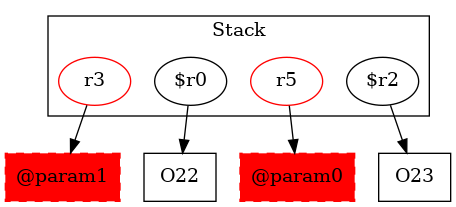

-1 : r5 := @parameter0: Node
-1 : r3 := @parameter1: Node
22 : $r0 = new Node
22 : specialinvoke $r0.|Node: void |init|()|()
23 : $r2 = new Node ->class soot.jimple.internal.JAssignStmt {Left: class soot.jimple.internal.JimpleLocal, Right: class soot.jimple.internal.JNewExpr}
23 : specialinvoke $r2.|Node: void |init|()|()
23 : $r0.|Node: Node f| = $r2
24 : $r4 = $r0.|Node: Node f|
24 : r3.|Node: Node f| = $r4
25 : return
